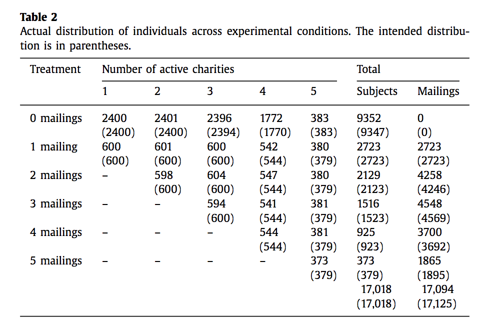

20 Supplement: What determines which charity people donate to? Are they in competition?
20.1 Charity: Does one contribution come at the expense of another? (Evidence, theoretical framework, empirical and experimental issues)
“To what extent does an individual’s contribution to one cause come at the expense of his or her other philanthropy?”
What does this question mean?
Why is it important/ who cares?
How can we observe this?
What factors determine a potential donor’s choice over a range of charities?
20.2 What does this question mean?
Standard framework: “Gifts to Cancer Research UK” and “Gifts to Oxfam” (or to these causes) arise out of a joint optimization; one doesn’t “respond” to the other
Prices and external changes can shift each, but we cannot “force you to voluntarily give” in a meaningful way
If we could shift \(\rightarrow\) apply theory of Conditional Demand (Pollak) \(\rightarrow\) “expenditure substitution”
“Prices” unclear in this context, depends on model of benefits of giving, rarely vary exogenously
Simpler question: Does a typical “promotion for CRUK” cause more or less giving to Oxfam?
- More difficult: Is the causality…
“CRUK promo” \(\rightarrow\)
“give more to CRUK”
\(\rightarrow\) give less (more) to Oxfam
???
- Hard to rule out direct effects of promo
(“mediation analysis” is difficult; – see Heckman’s work on this)
- And do we want to include or exclude the impact of “less money remains to spend”
(Pollak calls this the ‘money-income’ effect; it is distinct from the ‘income effect’ in the standard Slutsky decomposition.)
20.3 Why is it important/ who cares?
Moral issue for individuals, fundraisers, charities (‘am I really increasing the pie?’)
Practical issue for charity managers, charity networks, governments (tax, choice of charities to tax-favor)
- Public statements vs strategic plans
Intellectual: differentiates models and general understanding of other-regarding preferences and behavior
Is this a thing?
One big worry, that the massive Sept. 11 donations would hamper other charities, didn’t prove true … Americans have donated more than $1 billion to the [Katrina/ flooding] relief …. But the largess is starting to come at the expense of charities with other missions (WSJ, 2005).
The challenge is people like Betty and Larry Sullivan … They save all the charity solicitations they receive each year until December, then sort through them and make their contributions – generally about $30,000, or 10% of their income. … But already this year, moved by the plight of the victims, the couple has given $4,000 for the tsunami relief effort and some $35,000 to help Hurricane Katrina survivors, says Mrs. Sullivan. They’ve also been volunteering … The effort is taxing their financial resources …. As for donations to other charities this year, “That’s history,” says Mrs. Sullivan…
#Literature review I: Models of giving
Notation:
\(x_{i}\) : Individual \(i\) ’s non-charity consumption of the numeraire composite commodity (price normalized to 1)
\(g_{i}\): \(i\) ’s giving to the charitable or public good \(m_{i}\) : \(i\) ’s income
\(G=\sum_{i=1}^{N}g_{i}+t\) : total giving or total supply of the public good
\(G_{-i}=G-g_{i}\) : Giving by individuals other than \(i\)
\(p_{i}:\) Price of a unit of giving to the charitable or public good
All models include some form of the following “standard” budget constraint:
\(x_{i}+p_{i}g_{i}-m_{i}=0\)
\(g_{i}\geq 0,x_{i}\geq0\)
Theoretical predictions
Reinstein (2010) defines ‘’Expenditure substitution’’
- Conditional expenditure (Sugden; Pollak) response in one charity to a change in a preallocation of another charity.
| **Model** | Net Substitution? |
|---|---|
| Shock/Appeal driven | None |
| Public Goods (strict) | Complete within same category |
| otherwise none | |
| “Kantian” model | Only between similar categories |
| Reciprocity | Anything goes, may depend |
| … on group members’ reaction | |
| Warm Glow (sophisticated) | “Anything goes” |
| “probably” some substitution. | |
| Impact Philanthropy (concave) | Substitution scales with “impact” |
| of shocked gift | |
| Tithing/Fixed Purse/Homogeneous | Complete (perfect crowding-out) |
20.4 Literature II: Lab Experiments
Lab in-group dictator games and VCMs
\(||X||\rightarrow\infty\)
Andreoni and Miller (2002): GARP/WARP violations and price sensitivity of gifts
Fisman, Kariv, and Markovits (2005): Advances A&M,estimates utility function, classifies by types
- Substitution patterns in gifts to multiple other lab participants and oneself
Krieg and Samek (2014): Two simultaneous PGG with two different groups.
- KS find complementarities: giving for both PGs increases with a bonus for giving to one of these
Lab tests of competition/crowding out, involving real charitable giving
- Several on crowding out of ‘government spending’, others’ gifts
Reinstein (2005 experiment, WP dated 2012): first direct investigation of…
Direct/indirect effects of treatments (choice sets, matches/price, information/promotion) on own and other charity
Inferring “Expenditure substitution” of one gift for another (same or different category)
Mainly between-subject variation (randomized choice set orderings)
Multiple sequential choices in same experiment, random-lottery-incentive
Lab experiment, convenience sample


All of the specific shocks strongly increase giving to the targeted charities, and this leads to decreased giving to the charities not targeted; I interpret this as a form of crowding-out. In standard economic terms, subjects exhibit price-elastic demand and positive cross-price elasticities between charities, particularly when the charities serve similar goals [Unicef & Care]
When subjects … increase giving to one charity in periods where [it alone] is given to a positive treatment they generally decrease their total giving to the other charities and rarely increase it
- 33% of subjects have a relatively ‘fixed purse’: total giving varying less than 25% between stages
- But we can generally reject ‘complete crowding out’ (in key regressions)

Harwell et al. (2015, mimeo)
- Resembles a simpler Reinstein (2005/2012)
- Standard lab subject donate or keep any amount among 3 charities
- Video-based campaign and “challenge” for one of the 3 charities
- Repeat donation decision.
\(\rightarrow\) Campaign for one charity “fully crowds out giving to the other charities without changing the total donations”
In all cases, the campaign succeeded in increasing donations to the target organization; but, in all cases, total donations remained unchanged.
Ek (2017) “…The Effect of Similarity on Substitution…”
- Lab experiment, Swedish students, 42% Business/Econ majors
“Consequentialist” Model of giving : ‘Am I making enough of a difference?’
Consider two dimensions of charity difference: Local/Global (geographical scope) and ‘Cause dimension’
Between-subject variation in charity paired with UNICEF:

Design
20 EUR (approx) show-up fee
- In each of 5 rounds (RLI) …
Learn “exchange rates” for each charity (Unicef always about 1 Eur/point)
Can do “Slider Adjustment Task” for 120 seconds to earn points
Can allocate points earned among the 2 charities
- Cannot keep the money (could only avoid doing sliders) (Why?)
- Exchange rates for non-Unicef charity randomly drawn in each stage, without replacement, from 4, 8, 10, 12, and 16

Results


20.5 Lit. III: Field evidence (field and natural experiments, observational results)
Observational (PSID) results (Reinstein, 2010)
Data: 2001-2007 waves of the PSID/COPPS (annual then biennial), recall survey, loosely-defined cause categories
Households that give more to one type of charity tend to give more to others.
But many negative significant correlations between residuals from fixed-effects regressions
- Esp. for larger (prior) donors and for certain paired cause categories
Plausible econometric assumptions \(\rightarrow\) negative correlations are strong evidence of expenditure substitution
Interpretation: heterogeneous motivations for giving, small vs large givers

(Reinstein, 2010)
Disasters:
Deryugina & Marx (15, WP): Tax filings data, disaster data (USA)
Result: Donations in a state affected by a tornado (causing 10+ injuries) increase by 1.7-2% in that year and 1.9-2% percent in the 2 years after
Argue evidence against (complete) crowding out
Scharf ea. (15, unfinished):
Data from Charities Aid Foundation covering 130,000 individual charity accounts from June 2009-July 2014, observe donation amounts, dates..
During this time, 6 ‘major disasters’, UKDEC initiated major appeals
Results
Increase in giving after disaster appeal, no reduced giving to international relief later on
‘Fail to reject zero substitution’ of all other charity, with ‘precisely estimated’ effects
Except for health
Giving to all charities, even unrelated ones, seems to increase in the 5 weeks after disaster, but then decrease in weeks 6-13
Lange & Stocking (12)
Natural expt: Meer (17)
Matching campaigns at DonorsChoose.org increases (likelihood of, amount of) funding for one project
- But no significant impact on donations to other projects
Donkers et al, Field experiment (2016)
Access to databases of 5 largest charities in NL
Targeting ‘extra mailings’ to existing donors
all sent in one week (cf, donors to all 5 typically get 1 mailing every 2 weeks)
Results

Results
Direct: each experimental mailing generates 1.81 Euro in revenues, on average, so the short-run impact of mailings is positive.
Cannibalization, net: Each mailing lowers future revenues by 1.21 Euros, representing a 62% loss of the initial gain …the net revenues of 0.69 Euro is still statistically significant.
Competition
Extensive margin: -0.36% impact of a competitive mailing (cf predicted response rate of 13.39%)
Combined margins: reduction of 0.10 Euros for an additional competitive mailing (cf 2.41 Euros baseline) - 10% summed effect on all competitors
Long run: 5 months
Sending an extra mailing on top of the current mailing strategy reduces the total future donation with around €1.51 -Still positive effect in net of 1.81-1.51=0.30; significant?
Competition - not significant (but wide std error \(\rightarrow\) little power to detect
Marketing policy suggestions…
20.6 Synthesis, limits of previous evidence
Still mixed and limited evidence
Donkers ea provides the most powerful and relevant evidence, imho
But limited to a particular set of donors to multiple causes
Low-impact shock (extra mailing) to existing donors
Do not connect direct and indirect effects of mailings
Do not report on ‘how closeness of charities matters’
20.7 Reinstein and Riener, 2017 (WIP)
- Field experiment, registered AEA RCT registry
Nonstudents (marketing list, local Colchester residents) get emails and letters:
- Invited to sign up for ESSExLab and do short survey, 10 reward
- “First (No) Ask treatment” at end of survey
- If signed up, invited back after a delay to participate in Omnibus survey, 10 reward
- “Second Ask” treatment at end of Omnibus survey
Nonstudents, first invitation email, includes language:
We recently sent you a letter in the post inviting you to join the ESSEXLab participant database, which can also be found below. You have been randomly selected for a special reward for signing up - a £10 Amazon voucher!
Students (already ESSExLab participants) get email invitations:
- To do Omnibus survey, 10 reward
- “First (No) Ask treatment” at end of Omnibus survey
- Do do another survey (about employability), 10 reward
- “Second Ask” treatment at end
First ask treatments (between-subject randomisation)
- No ask
- Asked for Oxfam
- Asked for British Heart Foundation
Second ask treatments (between-subject randomisation, balance by first treatment)
- Asked for CRUK
- Ask for Save the Children


Charity choices; similar or distinct
Chosen based on UK prominence, potential to easily divide into disjoint similarity classes. (Ruled out charities with very similar names)
We confirmed the similarity classes in a separate survey (via Prolific Academic on 4 March 2017) of a demographically-similar group (N=104).
- Similarity was measured using both unincentivized and beauty-contest elicitation.
Timing, samples
- Nonstudent invites first ask (ESSEXLab), staggered groups of \(\approx\) 500
8, 10, 12, 15, 17 May, 3pm each day. Reminder 19 May.
144 completed
- Nonstudent invites second ask (Omnibus)
25 May 3pm, reminder 2 June 10am
97 completed (33% ‘attrition’)
- Student invites first ask (Omnibus)
Invitation 1 June 3:02pm
6 June, treatment switched to ‘earn 10 for sure’
Final reminder 15 June
227 completed, 223 valid
- Student invites second ask (Employment survey)
Invite 27 June 3pm
Final reminder 10 July
144 completed (35% ‘attrition’)
Results (very preliminary, see Stata)
- Strong crowding-out, cannot rule out perfect crowding out
- No evidence that similar charities crowd each other out more
- Need to examine further
- Evidence of selective attrition for nonstudents
20.8 What determines where people give?
20.9 Do people care about effectiveness
Overhead illusion
Impact about ‘desert’ of recipients
Charitable trust matters? Or self-justification
Social proximity
My ongoing experiments with ranking and rating
Add models from recent papers here↩
Todo for paper, minimally here: recap precise definition of Expenditure Substitution from Reinstein, compare to others’ related models↩
Note that if I care only about the total amount of the PG, the crowding out of ‘my previous giving’ should be the same as for others’ or for government spending, plus the money-income effect (less remaining after my prev donation).↩
So many of these!↩
Andreoni (1993), Bolton and Katok (1998), Eckel, Grossman, and Johnston (2004) (in-group[?]), Crumpler and Grossman (2006) (out-group) [recheck these]↩
Todo - Return to data: can we correlate this with particular demography and psych characteristics? Prior givers especially?↩
To do: look closer at design, statistical analysis and findings; Power to reject full-crowding? RLI?↩
Finds expenditure substitution, as in Reinstein, but in contrast, complete crowding-out↩
In typical experiments, participants do about 27 sliders in 2 minutes. Depending on the exchange rate, this should imply between about 10-40 Euros typically at stake?↩
Note they’ve a sixth round with exchange rate of 16 for both, but they don’t discuss it much↩
Little or no response of effort to the exchange rates↩
Give less (basically lower share, as earnings are similar) to UNICEF when other charity is ‘cheaper’ And slope is steeper (confirmed in regressions) when paired with a similar charity; much shallower when paired with charity that is dissimilar along othb dimensions ↩
Todo: Think about, look closer into whether this difference holds for people at the intensive margin (give to both).↩
Small donors may be mainly driven by temporary shocks and personal appeals, larger givers may have concave multi-charity warm-glow preferences. This broadly agrees with findings from Dellavigna et al; and Karlan and McConnell↩
“Second, for the most part the large increase in giving to international relief does not come at the expense of giving to other charitable purposes. Looking at the effect of disaster appeals to donations to the combination of all other charitable purposes (except international relief), we fail to reject zero substitution. The failure to reject zero substitution is not due to large standard errors, but rather effects that are close to zero and precisely estimated. When we look within the “all other” category at more narrowly defined charitable purposes, we also fail to reject zero substitution in all but one case. Giving to health charities is the one case we cannot reject zero substitution, and even there the magnitude of substitution is small. Third, although the substitution we find between international relief and other) charitable purposes is statistically indistinguishable from zero (excepting health), we see that the disaster appeals are associated with a behavioural response in giving to other charitable purposes, but the response is a shift in the timing of giving to other purposes. That is, the disaster appeals have an effect on giving to other charitable purposes, but the effect is time-shifting, not substitution.↩
Todo: Recheck more closely, consider context, statistical power, potential for crowding out↩
Cannibalization is estimated to be about 63%, so mailings are profitable for the charity as long as the costs are lower than 37% of the revenues or about 0.90 Euro. Accounting for sector-level effects, there is an additional loss of 10% of the revenues through competitive effects. The costs of a mailing should there- fore not exceed 27% of revenues, which is about 0.65 Euro. [cf actual mailing cost of 0.51 Euro], charities can still send out more mailings to increase their own revenues, without harming the total amount of money available for the good causes that the charitable sector supports as a whole.↩
4:11pm on 15 May. Note it’s every 2 day, skipping weekend days. Also reminded ESSExLab-no-survey signups on 20 May)↩